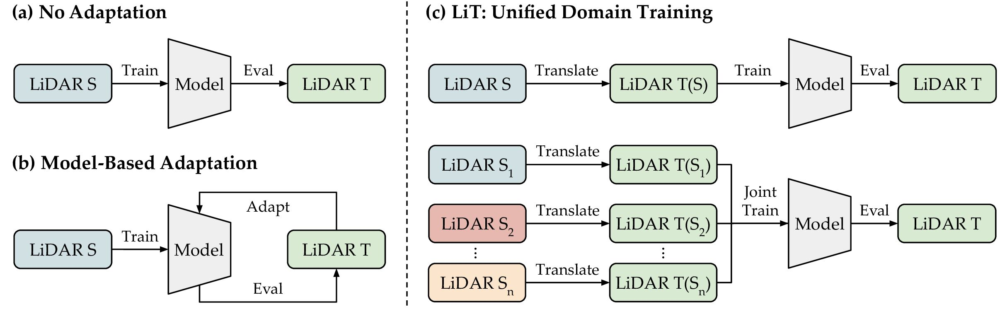
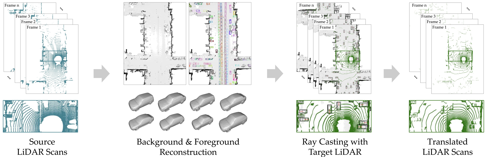

LiT: Unifying LiDAR "Languages" with LiDAR Translator
NeurIPS 2024
- Yixing Lao HKU
- Tao Tang Sun Yat-sen University
- Xiaoyang Wu HKU
- Peng Chen Alibaba
- Kaicheng Yu* Westlake University
- Hengshuang Zhao* HKU

Abstract
LiDAR data exhibits significant domain gaps when collected from different devices or vehicles, even within the same driving environments. These gaps, akin to language barriers, hinder the synergistic use of diverse LiDAR datasets, limiting the scalability and unification of perception models. To address this challenge, we present the LiDAR Translator (LiT), a novel framework designed to unify LiDAR data into a single target "language". LiT represents a comprehensive system that integrates: a) generalizable scene modeling for foreground and background reconstruction; b) realistic LiDAR simulation with statistical and ray-drop modeling; c) a highly efficient ray casting engine accelerated on GPU. LiT enables efficient state-of-the-art zero-shot and unified domain detection capabilities across diverse LiDAR datasets, marking a significant step toward practical and efficient domain unification for LiDAR-based autonomous driving systems. Source code and demos are available at: https://yxlao.github.io/lit.

Point Clouds Visualizations (Interactive)
We show interactive point cloud visualizations for the source domain and the LiT translated domains.
(Mouse wheel to zoom in/out, drag to rotate, ctrl + drag to pan)
Per-Frame Visualizations
We show per-frame visualizations for the source domain (1st column), the reconstructed scene (2nd column), and the LiT translated domains (3rd and 4th columns).
Unifying LiDAR "Languages" with LiT
LiT is a data-driven approach for unified domain learning, we compare LiT with model-based adaptations. (a) Training a model on source domain data and directly applying it to the target domain typically results in poor performance due to the domain gap. (b) Model-based adaptation techniques adapt the model to the target domain, but do not explicitly model the target domain data LiDAR characteristics and data distribution. (c) LiT directly translates LiDAR data from the multiple source domains to a unified target domain, effectively bridging the domain gaps and enables joint training across multiple datasets.

How LiT Works
LiT can directly translate LiDAR data from one domain to another. Given a sequence of source domain LiDAR scans, LiT reconstructs the scene background with neural implicit representations from the fused frame. The foreground objects are tracked across frames and reconstructed. With the reconstructed scene, LiT then performs GPU-accelerated ray casting with the target LiDAR model to generate the translated LiDAR scans, matching the target domain characteristics. The typical time for translating a 200-frame LiDAR scene is less than a minute.

The website template was borrowed from here.